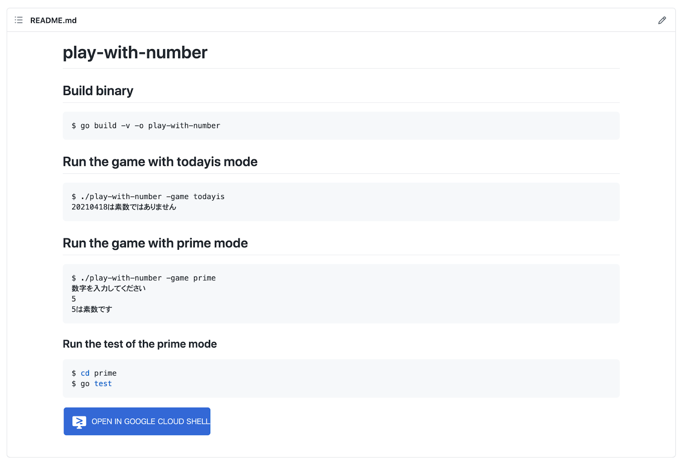
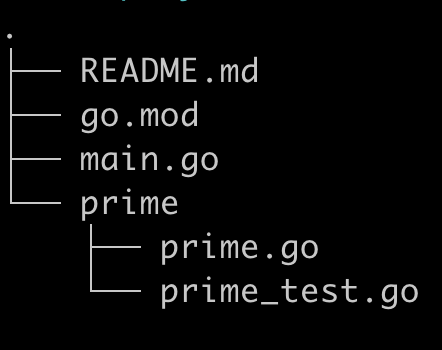
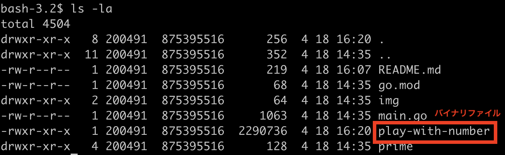

このコードラボでは、素数を判定するゲームを題材に、Goでコマンドラインツールをつくり、そのテストを行う体験ができます。
コードラボの流れは次のとおりです。
お使いのコンピューター上で Go の開発環境を用意していない方は、Google Cloud Shell というクラウド上の開発環境を利用することで、すぐに Go の開発をはじめることができます。
Google Cloud Shell の詳しい説明と使い方は Google Cloud Shell で Go の開発をはじめよう を参照してください。
GitHub からコードラボで利用するサンプルコードを取得しましょう。
$ git clone https://github.com/WomenWhoGoTokyo/codelab.git
Google Cloud Shell をご利用の方は、https://github.com/WomenWhoGoTokyo/codelab/tree/master/play-with-number の「OPEN IN GOOGLE CLOUD SHELL」ボタンを押下してコードを取得してください。
コードが取得できたら、codelab/play-with-number というディレクトリが作られていることを確認しましょう。
$ cd codelab/play-with-number $ ls README.md go.mod main.go prime
ファイルの構成は以下の通りです。

取得したサンプルコードを動かしてみましょう。
このサンプルコードは、任意の数字が素数かどうかを判定し、その結果を出力するコマンドラインで遊ぶゲームです。
素数とは、1とその数自身でしか割り切れない自然数のことです。
codelab/play-with-number ディレクトリで、以下のコマンドを実行します。
$ go build -v -o play-with-number
go build を実行すると、バイナリファイルが生成されます。

このゲームには二つのモードがあります。
一つ目は todayis モード、二つ目は prime モードです。
まずtodayisモードから試してみましょう。
実行オプションで -game を指定し、引数に todayis を入れて、バイナリファイルを実行してみましょう。
$ ./play-with-number -game todayis 20210418は素数ではありません
本日の日付（2021年4月18日）をyymmdd形式で表した6桁の数字は、素数ではないという結果が出力されました。
今度は prime モードを試してみましょう。
実行オプションで -game を指定し、引数に prime を入れて、バイナリファイルを実行してみましょう。
$ ./play-with-number -game prime
実行するとコンソールに 「数字を入力してください」と表示されます。
好きな数字を入力してみましょう。まず試しに、素数である 5 を入力してみます。
$ ./play-with-number -game prime 数字を入力してください 5 5は素数ではありません
入力した数字 5 は素数ではないという、期待と異なる結果が出力されました。
次の項からは、期待した結果が返ってくるように、prime のプログラムを修正していきます。まずはテストを実行して、期待と結果が異なる部分を確認します。
prime/ 配下の prime_test.go というファイルを確認します。下記のような Go のプログラムが書かれています。
codelab/play-with-number/prime/prime_test.go
package prime
import "testing"
func TestPrime(t *testing.T) {
tests := []struct {
arg int
want bool
}{
{
arg: 5,
want: true,
},
{
arg: 6,
want: false,
},
}
for _, tt := range tests {
if got := Prime(tt.arg); got != tt.want {
t.Errorf("Prime() = %v, want %v", got, tt.want)
}
}
}これは、prime/prime.go に書かれている Prime という関数をテストするための処理です。入力した数値が素数である 5 の場合は true を、素数ではない 6 の場合は false を返す処理が書かれています。
テストを実行してみましょう。
$ cd prime $ go test
テストの実行結果が出力されました。
--- FAIL: TestPrime (0.00s)
prime_test.go:22: Prime() = false, want true
FAIL
exit status 1
FAIL github.com/WomenWhoGoTokyo/codelab/play-with-number/prime 0.092s
入力値が 5 の場合も 6 の場合も false が返ってきており、期待と異なる結果になっています。このテストがパスするように、入力した値が素数の場合は true が返る形にコードを修正していきます。
コードを修正して、期待通り素数を判定できるようにしましょう。
まずは、main.goのmain関数とPrimeNumdeterminer関数を確認します。
codelab/play-with-number/main.go
package main
import (
"flag"
"fmt"
"strconv"
"time"
"github.com/WomenWhoGoTokyo/codelab/play-with-number/prime"
)
var game string
const (
defaultGame = ""
usage = "ゲームのメニューを選択"
)
func init() {
flag.StringVar(&game, "game", defaultGame, usage)
}
func main() {
flag.Parse()
var (
num int
err error
)
switch game {
case "prime":
fmt.Print("数字を入力してください\n")
fmt.Scan(&num)
...
default:
fmt.Print("オプションを指定してください")
return
}
PrimeNumdeterminer(num)
}
func PrimeNumdeterminer(num int) {
result := prime.Prime(num)
switch result {
case true:
fmt.Printf("%dは%s\n", num, "素数です")
default:
fmt.Printf("%dは%s\n", num, "素数ではありません")
}
}
...main関数では、コンソールに入力した値を flag.Parse() で読み込んで、 flag.Scan()でスキャンしています。
PrimeNumdeterminer��数では、primeパッケージのprime関数の戻り値が true だった場合に「素数です」と出力し、戻り値が true でなかった場合「素数ではありません」と出力します。
次に、prime.go の Prime関数を確認します。
codelab/play-with-number/prime/prime.go
package prime
func Prime(n int) bool {
divisor := make([]int, n, n)
for i := 1; i < n; i++ {
if n%i == 0 {
divisor = append(divisor, i)
}
}
switch len(divisor) {
case 1:
return true
default:
return false
}
}Prime関数では、divisor（除数）変数を定義して、組み込み関数makeを使ってスライスを作成しています。除数とは、割り算の「割る数」のことです。
Prime関数は、devisorの文字列長 が 1 の場合は戻り値として真偽値の true を、それ以外の場合は false を返しています。
改めて確認します。素数とは、1とその数自身でしか割り切れない自然数のことでした。
素数を判定する条件として、除数が1の場合だけでなく、除数が「入力した数自身」の場合も true を返すように修正しましょう。
Prime関数の、素数かどうかを判定する処理を実行している箇所を、正しい処理に書き直します。
条件分岐に、除数がその数自身の場合 true を返す分岐を追加します。
codelab/play-with-number/prime/prime.go
package prime
func Prime(n int) bool {
divisor := make([]int, n, n)
for i := 1; i < n; i++ {
if n%i == 0 {
divisor = append(divisor, i)
}
}
switch len(divisor) {
case 1:
return true
// この分岐を追加する
case n + 1:
return true
default:
return false
}
}更新したプログラムを保存したら、再度バイナリをビルドしてprimeモードで素数判定を実行してみましょう。
$ go build -v -o play-with-number
$ ./play-with-number -game prime 数字を入力してください 5 5は素数です
期待通り、5 は素数だと判定されました。
書き直した Go のプログラムが期待通り動作するか確認するために、もう一度テストを実行してみましょう。
$ pwd
/Users/{ユーザー名}/dev/codelab/play-with-number/prime
$ go test
テストの実行結果が出力されました。
PASS ok github.com/WomenWhoGoTokyo/codelab/play-with-number/prime 0.228s
期待通りにテストがパスしました。
本当に素数が判定できているかどうか確認するために、テストケースを増やしてテストを実行してみます。2 から 13 までの素数をテストケースに追加します。
codelab/play-with-number/prime/prime_test.go
package prime
import "testing"
func TestPrime(t *testing.T) {
tests := []struct {
arg int
want bool
}{
{
arg: 2,
want: true,
},
{
arg: 3,
want: true,
},
{
arg: 5,
want: true,
},
{
arg: 6,
want: false,
},
{
arg: 7,
want: true,
},
{
arg: 11,
want: true,
},
{
arg: 13,
want: true,
},
{
arg: 17,
want: true,
},
}
for _, tt := range tests {
if got := Prime(tt.arg); got != tt.want {
t.Errorf("Prime() = %v, want %v", got, tt.want)
}
}
}$ pwd
/Users/{ユーザー名}/dev/codelab/play-with-number/prime
$ go test
PASS ok github.com/WomenWhoGoTokyo/codelab/play-with-number/prime 0.344s
期待通り、全てのテストがパスしました。
このコードラボでは、素数を判定するゲームを題材に、Goでコマンドラインツールをつくりそのテストを実行する体験をしました。
Goでは、標準パッケージを使って簡単にコマンドラインツールをつくることができるので、みなさんも趣味や業務に役立つツールを作ってみてください。